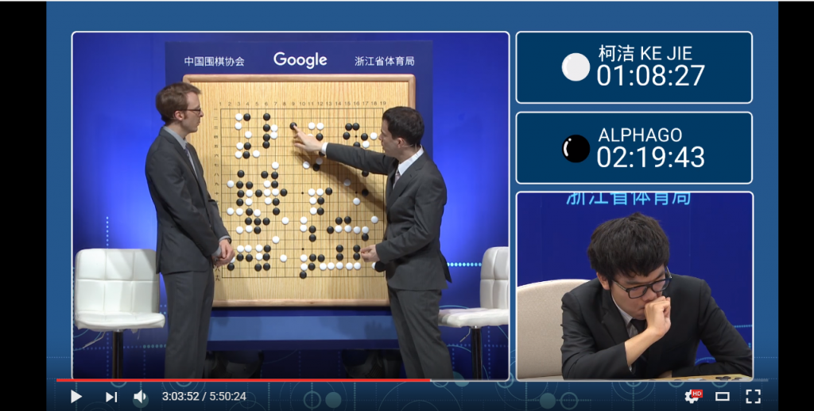

強化学習とは？
強化学習は、明確な正解がないときに使用可能な学習方法です。
つまり、システムが試行錯誤を繰り返して、適切な制御方法を学習していく技術を指します。
教師なし学習との違いは問いに対しての正解があるかないかです。
正解をわざと与えない→教師なし学習
明確な正解がない→強化学習
活用事例をご紹介
出典：The Future of Go Summit, Match Three: Ke Jie & AlphaGo
Google DeepMindによって開発されたコンピュータ囲碁プログラムであり、2015年10月に人間のプロ囲碁棋士を破った初のコンピュータ囲碁プログラムとなった。